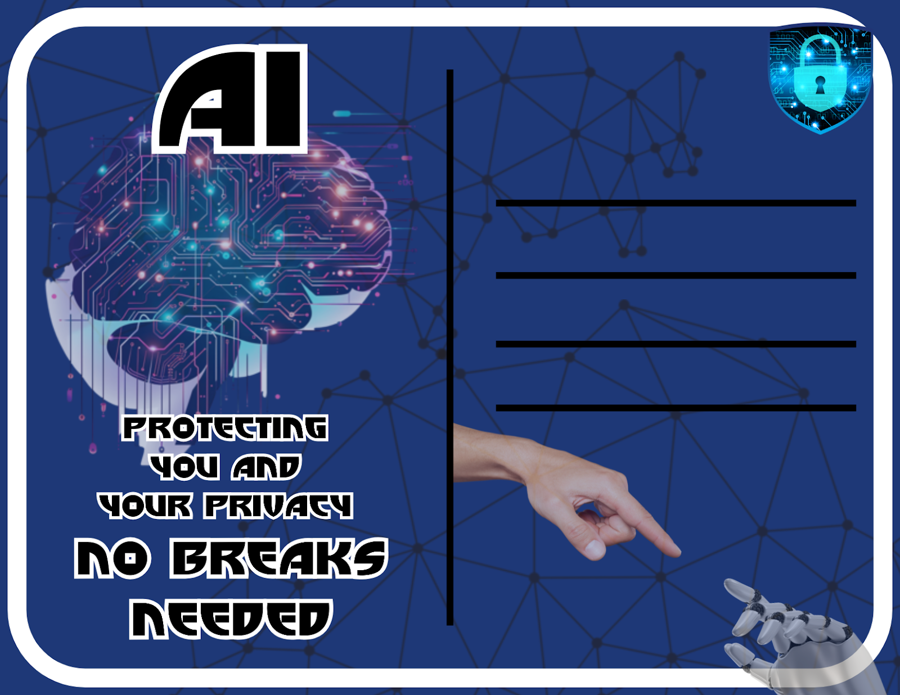

Speech
By DeWitt Lee
Good Afternoon Everyone My name is Dewitt Lee,
"With the advancements of today's technology, cyber security is a big problem we have in society not just on an individual level but also a national level as Americans. Our personal data, businesses infrastructure and even national level security we are at risk. As Americans this is not just a technical issue but a problem that threatens our country."
"AI offers a solution that matches the gravity of the problem, Unlike humans, that are limited by time, resources, and basic human error . AI operates continuously and without fatigue, It can monitor millions of data points at the same time . It can trace potential threats and neutralize them in seconds. When dealing with cyberattacks that are bound to happen a lot more in the near future. AI isnt just an option it's essential."
Silent Protector
By Grayson Reese
In a realm where data flows AI stands strong as danger grows It scans the code and reads the signs Detecting threats in the lines
A watchful eye sharp and fast Uncovering shadows and guarding past Wit algorithms keen and bright It battles hackers through the night
A silent watcher always near Protecting what we all hold dear.
Post Card
By Grayson Reese

This postcard is made to show that AI is good and will always be there to protect our information from malicious hackers. It works all the time to ensure our safety, with no breaks needed.
About The Website
By Julian Rivas
The Website you are currently viewing is another one of our products. This website was completely coded with HTML, CSS, and Java Script. The website uses github pages to stay accessible publicly on the web. The purpose of the website is to introduce individuals about AI, then explain why it is significant in cybersecurity. The website focus is our stance on the advancement of AI integrating in cybersecurity. As you have noticed, the website also features some products we made to help promote our stance. There are also some links to articles and websites where we got our information that is on our website.